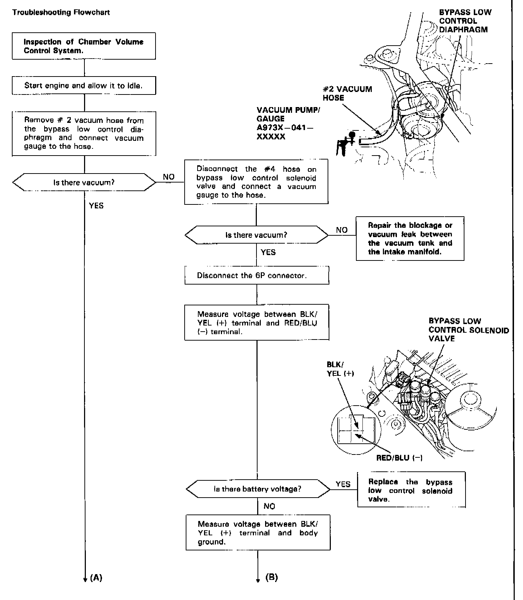
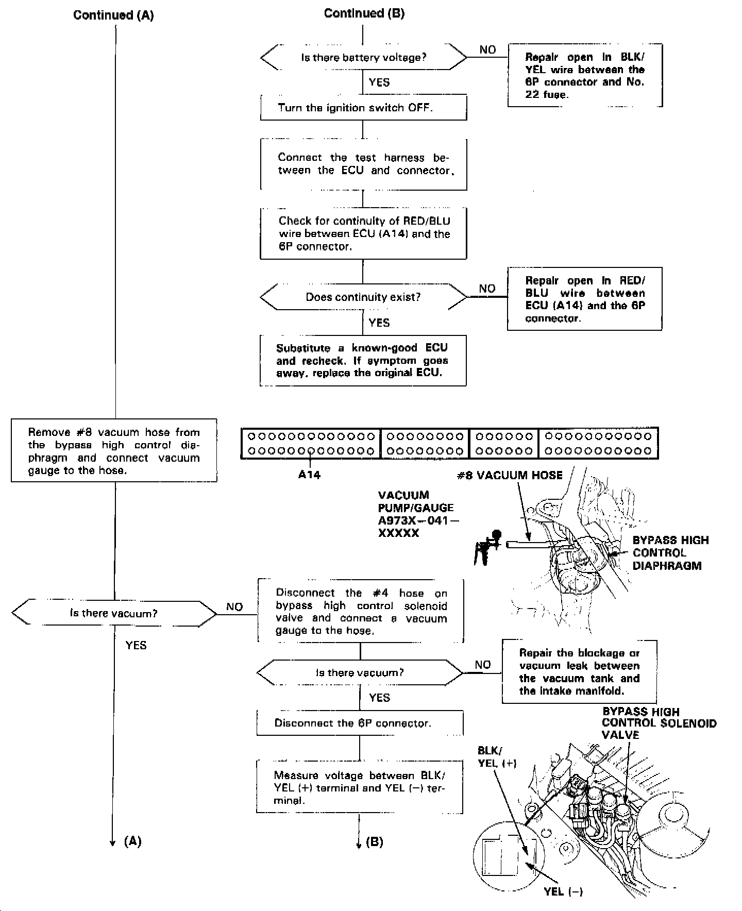
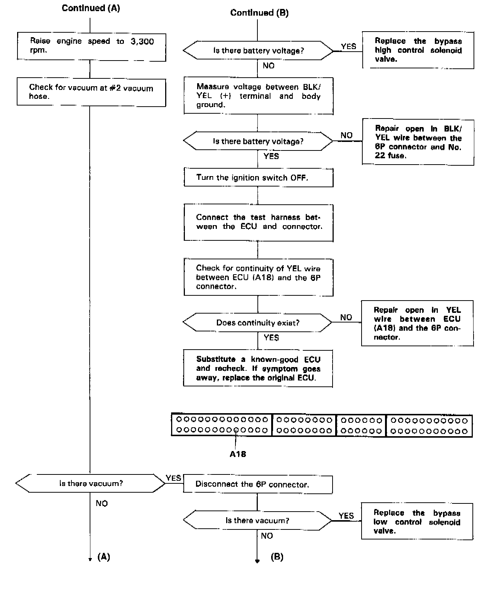
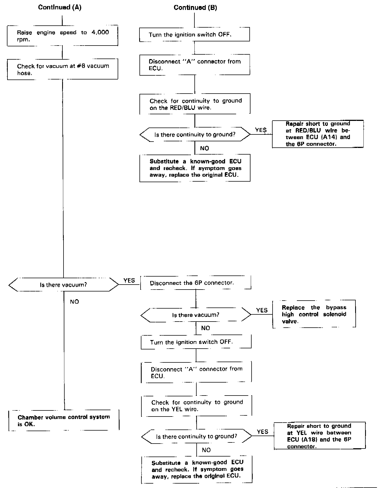

Operation CHARM
: Car repair manuals for everyone.
Home
>>
Acura
>>
1991
>>
Legend Sedan V6-3206cc 3.2L SOHC FI
>>
Repair and Diagnosis
>>
Powertrain Management
>>
Fuel Delivery and Air Induction
>>
Variable Induction System
>>
Testing and Inspection
>>
Chamber Volume Control System
Chamber Volume Control System




Troubleshooting Flowchart -
Chamber Volume Control System